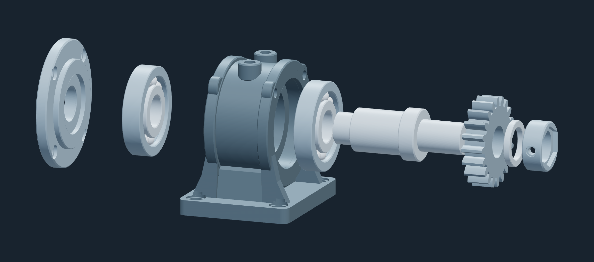
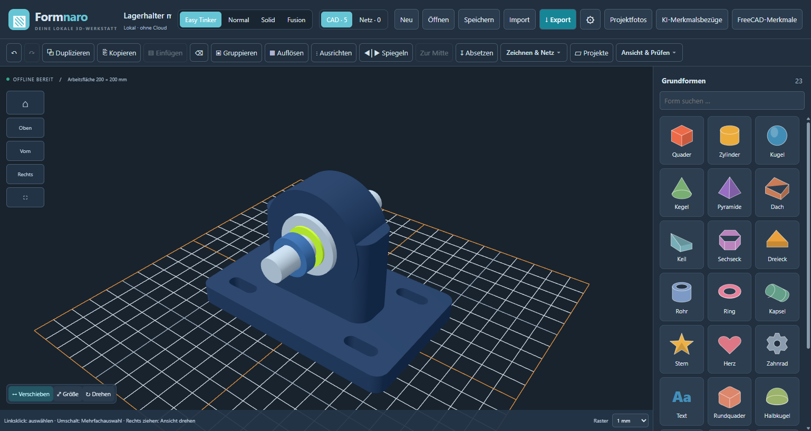
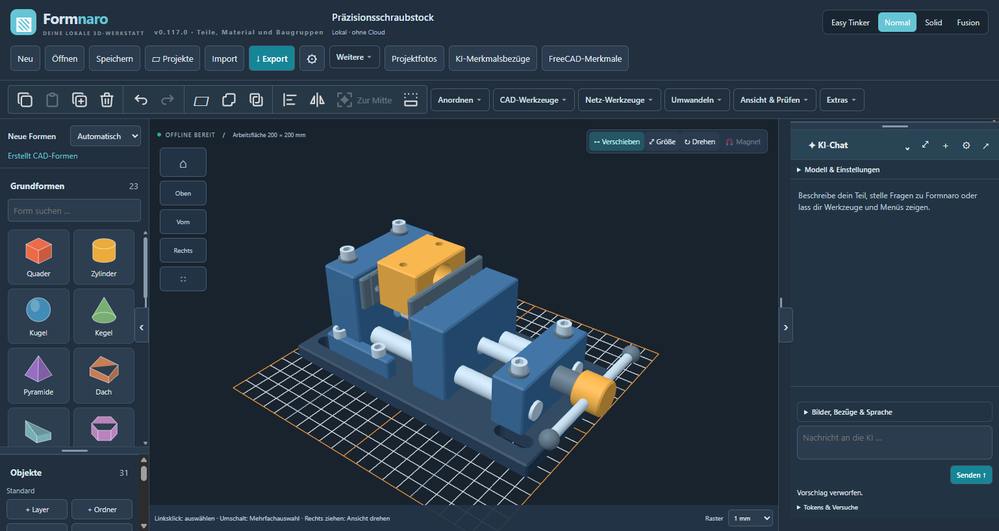
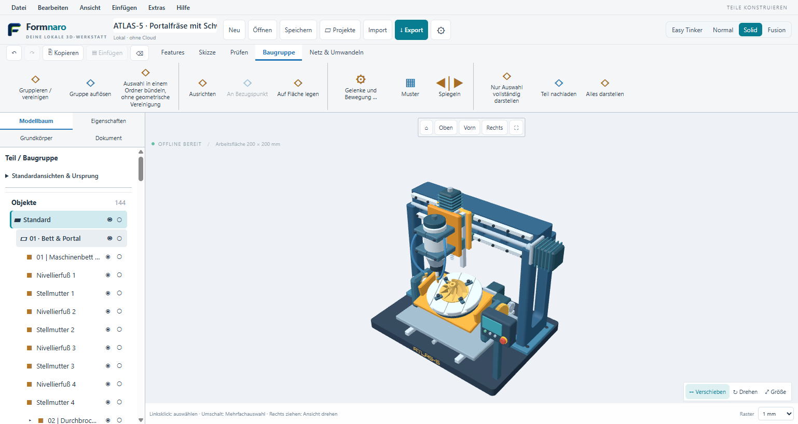
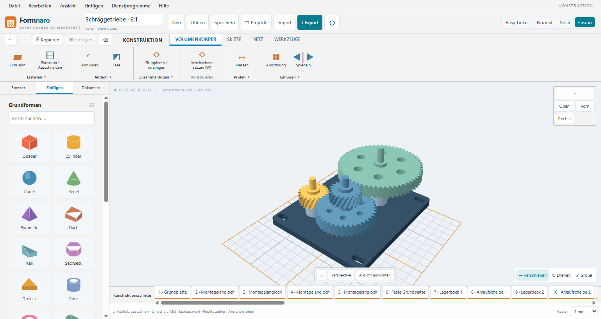

Vier Wege zur Konstruktion
Setze mit Easy Tinker Grundformen zusammen oder arbeite in Normal, Solid und Fusion mit detaillierteren Werkzeugen und Konstruktionsschritten.
Formnaro · Windows x64
Konstruiere Bauteile für Modellbau und 3D-Druck, repariere importierte Netze und setze Baugruppen in Bewegung. Formnaro läuft lokal unter Windows.
Windows-Download ↗0.126.0 Nightly r2 · Vorabversion · Windows x64

Setze mit Easy Tinker Grundformen zusammen oder arbeite in Normal, Solid und Fusion mit detaillierteren Werkzeugen und Konstruktionsschritten.
Verbinde Teile mit Gelenken und Kopplungen. Beim 6:1-Beispielgetriebe bewegst du die Antriebswelle und die übrigen Räder folgen der Kopplung.
Die normale Modellierung funktioniert offline. Optional kannst du KI für Modellieraufträge, Referenzbilder und Bedienfragen einsetzen. Für Cloud-Anfragen brauchst du Internet und einen Anbieterzugang.




Lade die portable Windows-ZIP herunter, entpacke sie vollständig und öffne Formnaro. Ein Beispielprojekt hilft dir, die Werkzeuge kennenzulernen.
Zur Anleitung auf GitHub ↗